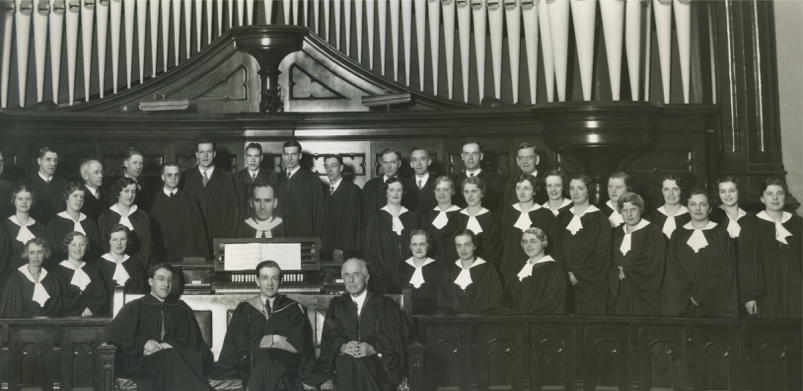
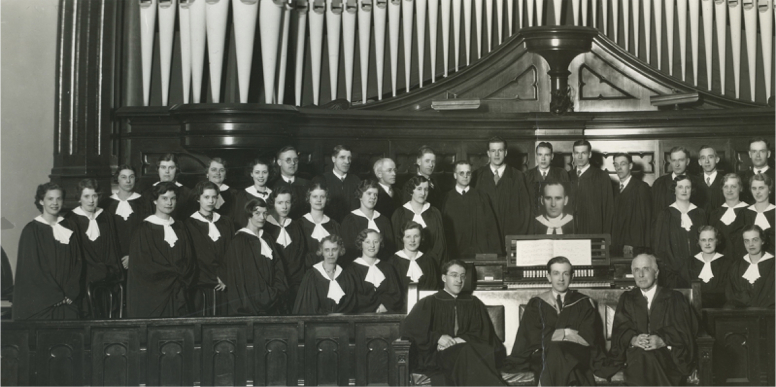

-1-MasterItem.svg)
Stories of Westminster United Church & its People / Page
142
Herb’s memoire of the choir (written in 1937) paints a picture of a busy and
dedicated group of
choristers who’s activities we will get to in a minute. But first we note that the choir loft
originally
had pews for seating. On one evening … “in the midst of one of his (Dr. Christie’s) truly beautiful
extempore prayers at a Sunday evening service everything was in perfect
quietness save only for Dr.
Christie’s rich voice. Suddenly, unmistakeable signs of distress were apparent on the
faces of the
soprano section, and a series of short cracking sounds emanated from their
vicinity. The seat of their
pew was giving way and there appeared the imminent prospect of the soprano line
disappearing
behind the front partition …” At a later date, as the choir grew in number, the pews were removed
and were replaced by chairs.
Here is the choir in 1934 (Rev. Bonnell’s head in the centre)
Concerning choir activities at that time; The Men’s Musical Club of Winnipeg had started
The Manitoba Musical Festival in May, 1919. Westminster Choir entered the
competition for their
first time in the Festival’s first year. Then after an absence in the competition of 10 years we were
again performing in 1930 when we won the Grade B Shield for church choirs. Then
we won
the Grade A Shield in 1933, 1935, and 1936.
During the ministry of our fourth minister, Dr. John Sutherland Bonnell, Herb
reports, “we were
forced to hold two Easter Morning Services — identical in every respect- to accommodate the crowds
Music at Westminster

